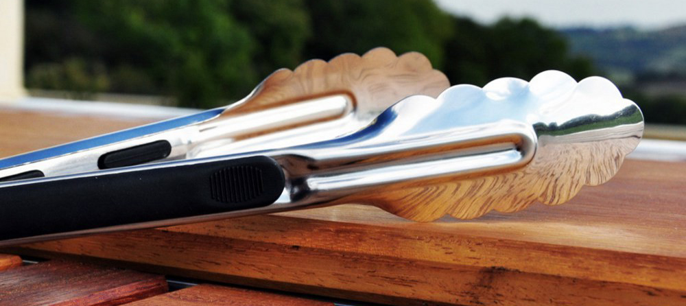
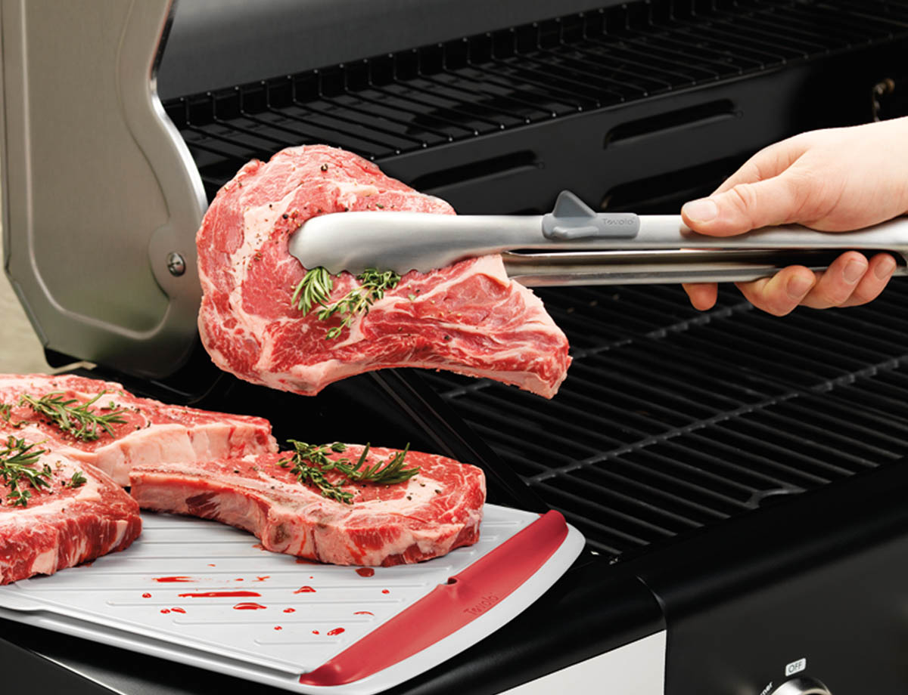

Tongs
Good tongs are great multitaskers. You can use them to transfer raw chicken from a plate to the grill, turn delicate veggies or plate a rack of ribs once they‘re cooked to perfection. Our favorite are the 16-inch locking tongs that come in the $20 OXO Good Grips 2-Piece Grilling Tools Set. We don‘t usually recommend sets, but both the tongs and spatula that come in this one beat a range of single tools in our tests. We like these tongs because of their excellent construction and delicately scalloped heads, long reach and grippy handles that feel good in a bare hand or a grilling glove. If you don‘t want to buy the set, we also recommend the OXO Good Grips 16” Locking Tongs, which are basically identical to our main pick, but they don‘t have the large hanging loop that the ones in the set do. But at $15, they only cost five bucks less than the set.
At 16 inches, the OXO tongs are long, but not too long. They‘ll keep your hand clear of the grill‘s searing heat and the occasional flare-up. We‘ve used a number of shorter grilling tongs in the past, and the OXO‘s few extra inches are a welcome feature in dealing with high grilling temperatures.
They‘re made of thick, heat-resistant 430-grade stainless steel. That‘s the same stuff that many mid-to-high-priced gas grills burners are constructed out of, so it‘s a good bet that it‘ll stand up to the heat of your grill‘s cooking surface. They‘re also easier to hold than any other model we‘ve tried, thanks to grippy silicone accents on the handle and rolled-steel construction, which keeps them from bending under heavy loads.
They‘re made of thick, heat-resistant 430-grade stainless steel. That‘s the same stuff that many mid-to-high-priced gas grills burners are constructed out of, so it‘s a good bet that it‘ll stand up to the heat of your grill‘s cooking surface.
The tips of the tongs boast wide, gently-tapering heads with a scallop pattern along their sides perfect for picking up delicate fare. But they‘re also sturdy enough to handle thick cuts of steak. The spring strength is on par with the better tongs we‘ve tested; it‘s easy to compress and smartly snaps back into place when you let go of the tongs. After about six months of being run through a dishwasher on a regular basis, the OXO tongs have shown less wear than other tongs we‘ve tested. The metal ring makes them very easy to hang.
Other tongs have similar lock mechanisms, but we haven‘t found any that feel as sturdy as the OXO‘s.The OXO Good Grips 2-Piece Grilling Tools Set just came out this year, so we haven‘t seen any editorial recommendations for it. But Amazon users give it 4.5 stars. Lisa McManus, the executive editor of equipment testing at America‘s Test Kitchen, highly recommends OXO Good Grips 16” Locking Tongs for grilling. Expert Meathead Goldwyn told us that these are his go-to tongs. (He did tell us that the locking mechanism in his broke, but he cooks over a grill more than the average person would, and the tongs can be replaced with OXO‘s lifetime satisfaction guarantee.) Men‘s Health and Good Housekeeping also heap praise on them. They are the best selling tongs in Amazon‘s Home and Kitchen Department, with 572 five-star reviews out of a total of 685 reviews.
The competition
We were disappointed by the tongs that come with Cuisinart‘s CGS-134 3-Piece Grilling Tool Set with Grill Glove. The steel feels less sturdy, and the heads of the tongs don‘t line up when the handles are compressed, making it difficult to grasp small objects and easy to tear the skin of a sausage or chicken. The low-quality vinyl-and-metal handles don‘t offer enough grippiness for control. They also can‘t be locked closed for storage. Although we like the intuitive locking mechanism and sturdy, grippy handles on the tongs that come as part of the Weber Style 6707 2-Piece Stainless Steel Barbecue Tool Set, the scalloped heads on the tongs have sharp, angular edges, so they punctured sausage skin.
Although we like the intuitive locking mechanism and sturdy, grippy handles on the tongs that come as part of the Weber Style 6707 2-Piece Stainless Steel Barbecue Tool Set, the scalloped heads on the tongs have sharp, angular edges, so they punctured sausage skin.
The D-shaped tong heads are also a little more awkward than the symmetrical heads on our pick. We found the spring inside of the 6707s to be pretty weak, so the tool was slow to respond when we released pressure on it. The tongs in the Cave Tools BBQ Grill Tools Set come with a small metal ring to keep them closed for storage but lack a locking mechanism.
While we liked the large heads on the tongs, the heads are more like a slotted spoon and fork, which made it difficult to pick up smaller pieces of food. Also, the stainless-steel handles offer no grip. Steven Raichlen‘s Best of BBQ Forged Stainless steel tongs cost $17, and they‘re two inches longer than the 16” OXO Good Grips Locking Tongs. But we‘ve found that as the arms on your tongs get longer, your food gets heavier when you lift it.
OXO‘s 18-inch set of Stainless Steel Barbecue Tongs are also too long and lack a locking mechanism. Weber‘s cheaper $14 Weber 6610 Original Tongs have handles that aren‘t as thick or as well-made as the OXO‘s, and the curve at the end of the heads makes them kind of ill-suited for getting underneath of a piece of meat on the grill. Pass on the Outset Stainless Steel Locking Tongs.
They‘re too long at 17½ inches, and the locking mechanism on them felt a little flimsy. We were able to bend it slightly with a minimal amount of fingertip pressure. Don‘t bother with the freakishly large tong heads on GrillPro‘s 40240 16-inch Stainless Steel Tong/Turner Combination or their flimsy construction. The Cuisinart CIT-201 Folding Grill Tongs cost the same as our main pick and fold up for easy storage. But they‘re an inch shorter, don‘t lock, and have a predominantly plastic body.
Weber‘s cheaper $14 Weber 6610 Original Tongs have handles that aren‘t as thick or as well-made as the OXO‘s, and the curve at the end of the heads makes them kind of ill-suited for getting underneath of a piece of meat on the grill.
The Weber Style 6441 Professional-Grade Chef‘s Tongs cost three bucks less than the 16-inch OXO Good Grips Locking Tongs do, but their heads are cupped so it‘s awkward to pick things up with them. The tongs that come in this Coleman Three-Piece BBQ Tool Set are flimsy, short, and have no lock. While these Brinkman Stainless Steel Grilling Tongs look like a steal at $7, when we tried them, their wooden handles felt cheap. The tips of the tongs are deeply recessed, making them great for picking up salad but crap for dealing with food on your grill. The Messermeister 16-inch Stainless Steel Locking Tongs cost $9. We found that they were made of flimsier steel than our OXO pick was and had heads that slipped in and out of alignment when we attempted to pick up smaller objects off our grilling surface. More troubling than this, the stainless steel of the tongs appeared to tarnish after a single run through the dishwasher.